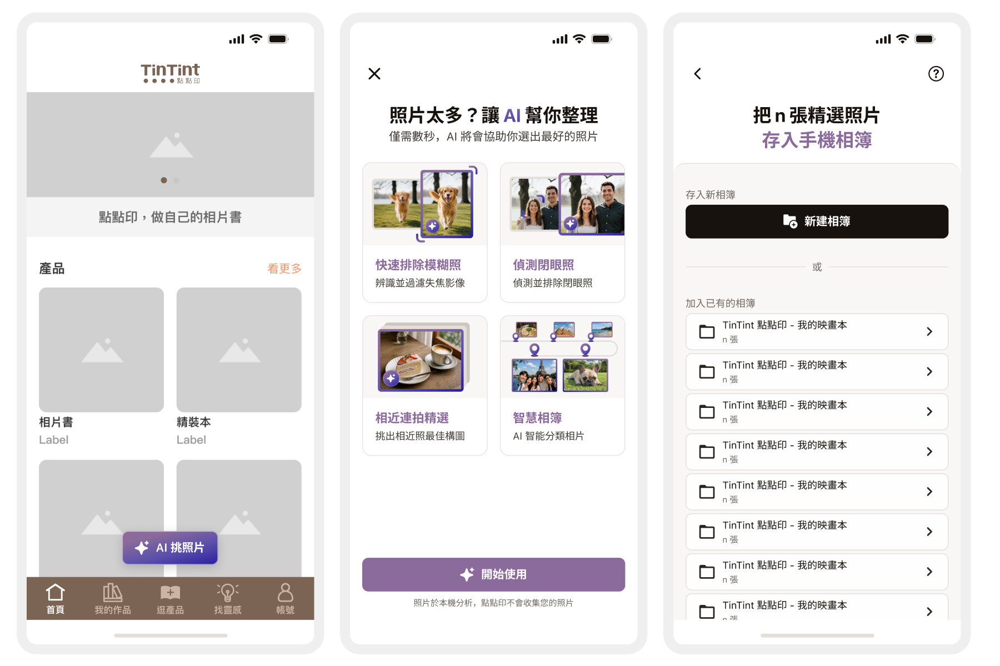
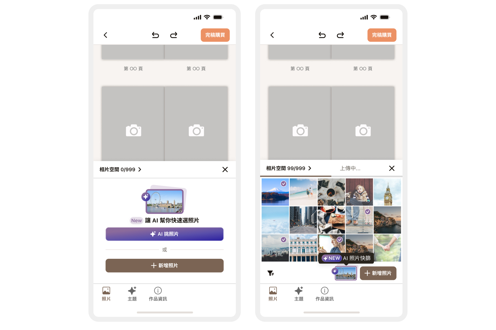
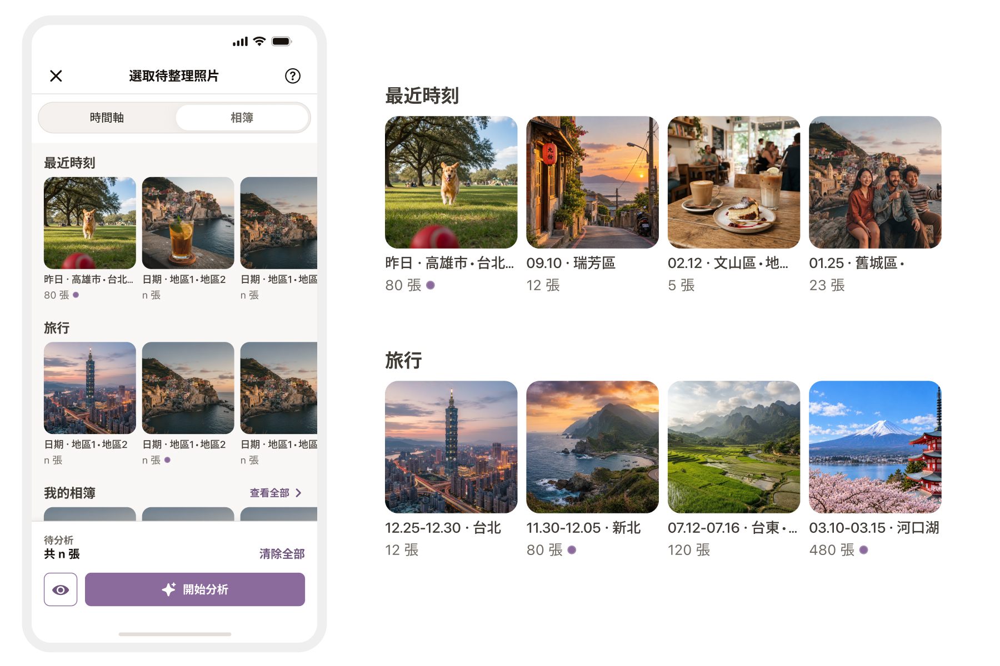
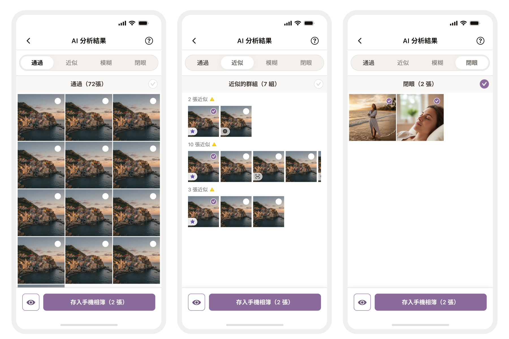
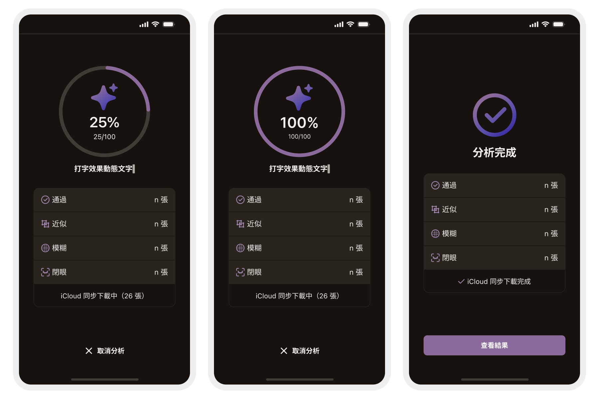
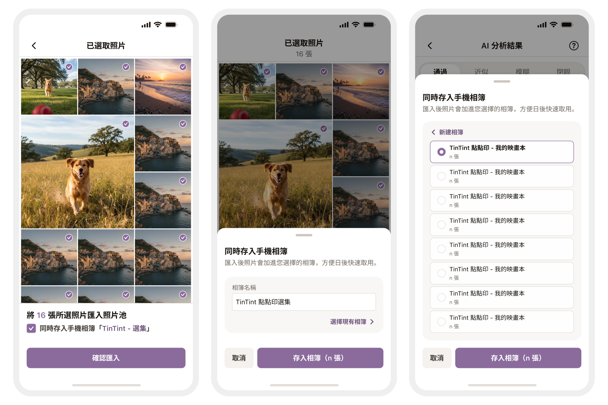
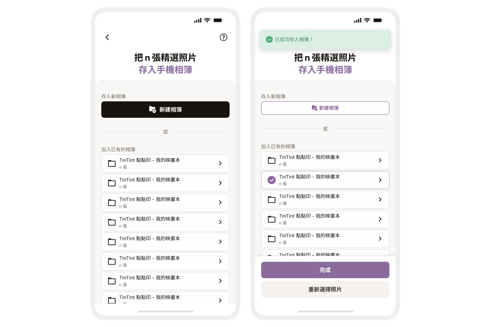
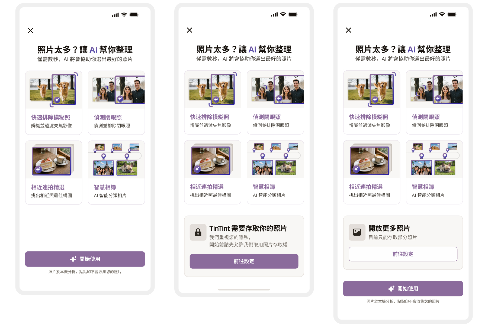
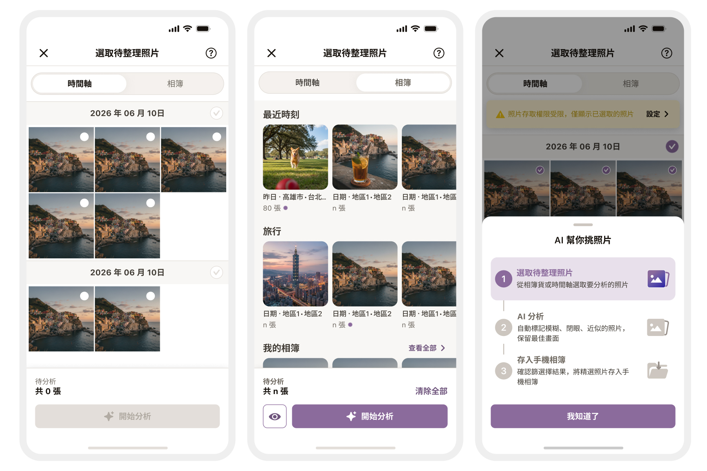

概述 Overview
AI 挑照片｜Ai Photo Picks
#B2C #iOS App #AI Feature
Team | TinTint 點點印
Role | UI/UX Designer
Collaborators | PM、iOS 工程師
Year | 2026
- 產品服務：點點印 iOS App「AI 挑照片」功能。可自動偵測模糊、閉眼與近似照片，並提供首頁與編輯器雙入口。
- 專案挑戰：需以單一 AI 判斷機制滿足兩種情境的使用者：一是尚未開始製作、僅需整理照片庫；二是製作途中、陷入選片障礙。
- 設計策略：採用「底層共用、出入口分流」策略。兩條流程共用核心分析與結果頁，但依據使用者目的，客製化不同的起點與終點。
- 嵌入方式：無縫融入既有操作。不額外新增結構，將 AI 功能自然配置於使用者必經之處（如：首頁浮動按鈕、編輯器工具列、選擇照片頁）。
痛點分析 Pain Point
兩種「無從下手」的情境
設計決策：雙入口分流
需求差異決定了流程必須分開設計。若僅設單一入口，必定會犧牲其中一方的體驗：
- 放在首頁：正在編輯作品的使用者，必須被迫中斷流程並退出才能使用。
- 放在編輯器：尚未開始製作作品的使用者，將永遠無法發現此功能。
情境一｜尚未開始：照片庫太亂
面對數百張照片毫無頭緒，僅有模糊的整理動機。痛點：缺乏明確的「起點」。
情境二｜編輯途中：卡在選片判斷
面對數十張候選照片，難以快速比對畫質與人物神情。痛點：缺乏客觀的「判斷依據」。

功能定位 Define
兩條流程共用同一套分析、相同的判斷項目（模糊・閉眼・近似）與相同的結果頁。差別只有兩件事：從哪裡進來，以及流程在哪裡結束。
首頁入口
從哪進｜首頁底部的浮動按鈕。
解決什麼｜照片庫太亂，想先整理起來。
結果去哪｜存入手機相簿。
編輯器入口
從哪進｜照片選單。
解決什麼｜已經在做作品，不確定哪些照片比較好。
結果去哪｜直接匯入當前作品的相片池。
設計限制 Constraints
分析在裝置端執行
判斷項目取決於系統版本，較新的系統多一項美感分析。同一個功能在不同手機上的推薦品質不完全相同。
相片權限有三種狀態
完整・限制存取・無權限，每一種都要有對應的畫面，不能只處理「有」跟「沒有」。
整理好的照片存在手機相簿
照片不在 App 裡。之後回到 App 選照片時，得有辦法讓使用者認出這些相簿。
編輯器已有相片額度
新入口必須沿用既有的額度規則，不能自己另立一套。
手機螢幕小
結果頁要在一個畫面內同時容納四個分類、照片清單與操作按鈕。
設計決策
流程終點由使用者目的決定
從編輯器進入的使用者帶有明確目的（回到排版作品），若強制進入「完成頁」只會增加操作摩擦力。因此，同一套分析結果，依據使用者當下的情境提供兩種收尾路徑。
前期共用流程
功能介紹
授權照片
選擇照片
執行分析
結果頁
結果頁後分歧
路徑 A：首頁入口
完成頁
新建或加入相簿
精選照片存回手機
路徑 B：編輯器入口
點擊確認
於結果頁底部操作列
關閉畫面
照片直達相片池

動態介面設計：AI 角色隨使用者情境翻轉
介面的視覺主次必須緊貼使用者當下的任務動態轉換，而非維持靜態。
- 空狀態｜AI 躍升核心起點：面對空白畫面時，使用者迫切需要「從零到一」的推動力。系統會隱藏常規工具列，將「AI 挑照片」提升為畫面的首要引導。「手動新增」則降級為次要操作。
- 已有內容狀態｜AI 退居輔助工具：當相片池已有內容，使用者已有既定目標，AI 僅為眾多選項之一。AI 按鈕會收納於底部工具列，與常規的「排序」、「新增」選項並列提供服務。
導入「智慧相簿」：自動分類，無縫融入熟悉介面
當開啟相簿選擇頁面時，系統會自動梳理本機相片，透過「智慧相簿」概念為使用者貼心分類：
- 最近時刻｜聚焦「短暫且具關聯」的事件（如好友聚餐），將同場景的相片自動集中成冊。
- 旅行｜統整「長時間、跨日跨地」的行程，將連續數天、不同地點的出遊紀錄完整歸類。
不另闢新分區：點擊「查看全部」時，智慧相簿沿用既有的相簿架構與排序規則自然浮現，而不是獨立成一個新分頁。使用者不需要為了新功能重新學一套瀏覽方式。

互動設計

依判斷原因，智慧分流四類結果
結果頁面透過標籤頁分為「通過」、「近似」、「模糊」、「閉眼」四類，並標示各自數量。介面支援整批全選或逐張微調，底部固定顯示最終將存入的總張數。
分類設計的核心在於對應不同的確認任務：
- 通過：檢查是否有遺漏的好照片。
- 近似：確認系統挑選是否符合心意。畫面以「組」為單位呈現，系統會預挑一張標記星號，其餘預設不勾選。使用者的決策焦點從「單張好不好」轉化為「同組要留哪一張」。
- 模糊與閉眼：檢查系統判斷是否有誤。
等待體驗優化：過程即資訊
捨棄單調的讀取提示，將處理過程轉化為透明資訊，消除等待時的空白感：
- 即時動態回饋：畫面中央設置圓形進度環，同步顯示百分比與處理張數；下方輔以打字效果的動態文字，精準說明系統當下運作狀態。
- 進度高度透明：即時累計「通過、近似、模糊、閉眼」四項分類跳動數字。進度環解答「還要等多久」，分類計數則展現系統「正在做什麼」與「找到了什麼」。
- 任務拆分顯示：獨立標示 iCloud 下載張數，與相片分析任務脫鉤。若進度停滯，使用者能直覺判斷問題癥結。
- 無縫流暢收尾：完成後不跳轉頁面，進度環直接轉為完成勾號。分類統計保留原位並提示同步完成，底部隨即浮現「查看結果」按鈕，且全程提供隨時取消分析的選項。


彈性設計：為跳過的操作保留補救空間
「同時存入手機相簿」作為次要功能，僅在單一作品首次進入時以底部面板進行單次引導，避免干擾主流程。引導雖為一次性邀請，但功能入口會以勾選框形式持續保留於結果頁，避免使用者改變心意時找不到功能。
- 接受引導：結果頁的選項將預設為勾選，並明確顯示相簿名稱。
- 跳過引導：該選項改為預設不勾選，但元件依然會保留於畫面上，提供隨時反悔與補救的機會。
狀態隨內容更新：變更選取即重置存入紀錄
介面狀態必須真實反映當下內容，而非僅記錄過往動作。
- 動態重置防呆：系統會記錄並避免同批照片重複存入，但若使用者返回修改選取陣容，原有的「已存入」標記就會自動清除。此機制可避免舊狀態殘留，防止使用者誤以為新選取的照片也已經儲存。
- 完善收尾細節：在完成頁面中，新建相簿時會先提供照片預覽以輔助命名；系統會自動偵測同名相簿並要求確認，防止重複建立；所有存入動作的成功或失敗皆會給予即時提示。


四種權限狀態，四種畫面
完整權限＋第一次開啟
顯示功能介紹，附精選照片的輪播預覽。
完整權限＋已看過
跳過介紹，直接進入選擇照片頁。
無權限
顯示介紹，只放權限說明，不放精選照片卡片。
限制存取
每次都顯示（授權張數隨時會變），並持續提醒「目前僅提供部分照片」，提供加選照片或前往設定的入口。
選擇照片頁：時間軸與相簿雙模式
提供「時間軸」與「相簿」雙軌瀏覽，順應使用者以「時間點」或「特定分類」尋找照片的直覺，無須改變既有記憶習慣。
- 雙模式檢視：時間軸依日期排序；相簿模式將智慧相簿置頂於既有相簿之上，並保留頂部搜尋列。
- 動態置頂：既有相簿依「最近使用」排序，最新點過的排在首位，並加上紫色時鐘圖示加強辨識。
- 選取狀態視覺化：相簿卡片顯示照片總數，並以紫色圓點標記內含已選取照片的相簿，無須點擊進入即可一目了然。
- 無縫權限引導：存取受限時，頂部顯示提示列供快速設定或加選照片；權限變更後清單即時自動重載，確保操作不中斷。

視覺系統
ai-layout 色階
0
#FFFFFF
10
#E8E1EB
20
#D1C3D7
30
#B9A6C4
40
#A288B0
50
#8B6A9C
60
#6F557D
70
#53405E
80
#382A3E
90
#1C151F
100
#000000
gradient-01｜AI 主要按鈕
linear-gradient(142deg, #8B6A9C 21.92%, #5A4FAA 60.94%, #2B1FA0 99.95%)
- 色彩設計：以色階 50 為起點向鄰近色相延伸，採用「雙色相漸層」取代單一紫色的明暗變化，為按鈕注入視覺流動感。
- 細節處理：搭配
white-50細邊框與radius-btn圓角，確保在深色背景下依然保有清晰的邊緣輪廓。 - 應用場景：專用於 AI 核心操作（如相片池空狀態的「AI 挑照片」、選擇照片頁的 AI 入口卡片）。一般流程則維持既有的棕色實心按鈕，以建立明確的視覺區隔。
只新增一種語意色
AI 專屬的紫色是這次唯一新增的語意色。提示、警示與錯誤沿用既有的 info（藍）、warning（黃）、danger（紅），與頁面其他功能共用同一套色。
既有行為維持既有的顏色，使用者不會因為新功能上線而需要重學舊操作。
Semantic token 分五類
色階之上對應 18 個 Semantic token：bg/ai-layout*、text/ai-layout*、border/ai-layout*、icon/ai-layout*、btn/ai-layout-*。
元件引用 token 而不是色碼，改色時只動一層。
元件設計

分析進度環
兩種狀態：分析中顯示百分比與「已處理／總張數」，中央為 AI sparkle；完成時環填滿、中央換成勾號。下方動態文字隨階段替換。

四分類 Tab
固定四項且順序不變，每項後方附該類張數。兩種狀態：選中為紫色底，未選為透明底。

照片勾選圈
固定於縮圖右上角。三種狀態：未選為空心圈、已選為紫色勾號、系統預挑加註星號（僅出現在近似組）。群組內各張可獨立切換。

相簿卡
基本內容為相簿名稱與照片總數。兩個標記可同時出現：最近使用加紫色時鐘圖示、內含已選取照片於右側加紫點。

AI 入口卡片
標題、一行說明與 gradient-01 主要按鈕。用於兩處：相片池空狀態與選擇照片頁，同一組元件、不同層級。

底部固定操作列
左側預覽按鈕，右側主要 CTA 並顯示當前選取張數。0 張時 CTA 停用；有選取時啟用，並出現「清除全部」。
成效驗證
雙流程終點分流驗證
驗證指標：編輯器入口的「匯入完成率」、首頁入口的「相簿存入率」。
洞察目的：因兩條流程的使用情境與終點不同，獨立計算可避免數據互相稀釋，確保成效評估的準確性。
透明化進度以降低等待焦慮
驗證指標：分析完成率、中途取消時的進度百分比（%）。
洞察目的：若取消行為集中於初期，代表使用者缺乏耐心或未見明確進展；若集中於後段，則反映整體處理時間過長。
AI 判斷結果的接受度（核心轉換）
驗證指標：結果確認率（分析完成後，點選「匯入」或「存入」的比例）。
洞察目的：檢驗整項功能的核心轉換成效，評估使用者檢視 AI 分類結果後的實際採用意願。
AI 篩選精準度交叉比對
驗證指標：交叉比對「AI 通過率」與「使用者手動調整率」。
洞察目的：若通過率低且調整率高，代表 AI 篩選標準過於嚴苛（使用者需手動加回照片）；若兩者皆高，則代表 AI 篩選過於寬鬆，未達初步過濾效果（使用者仍需自行刪除）。
Takeaway
專案的核心不在於 AI 的準確度，而是同一套技術如何靈活適應不同情境。AI 應自然融入使用者的既有動線（如首頁按鈕、編輯器、選擇照片頁），作為流程中的擴充選項，而非強迫使用者走向全新路徑。
終點不該由系統決定
移除干擾性的「完成頁」，避免多餘步驟阻礙已有明確目標的使用者接觸作品。
功能主次隨情境調整
AI 的介面定位應根據「相片池是否有照片」等具體處境，動態翻轉功能的優先順序。
在既有認知上建立標記
善用排序與標記提示，不新增多餘分區，避免強迫使用者重新適應已熟悉的介面。
賦予等待時間資訊價值
透過即時分類計數，將單調的進度條等待過程，轉化為有用的資訊回饋。
引導可跳過，入口需保留
當下跳過不代表永遠不需要，應保留常駐入口（如勾選框），確保使用者隨時能找回操作路徑。
狀態顯示需與內容同步
當操作內容變更時，先前的狀態（如「已存入」）必須即時失效，避免過期的標記誤導使用者。